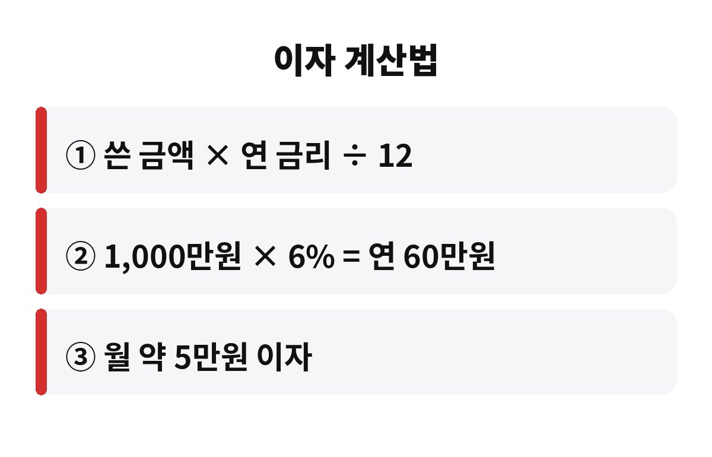

마이너스통장 이자는 1,000만원을 연 6% 금리로 1년 쓰면 약 60만원, 한 달로 나누면 약 5만원이에요. 월급 통장에 마통을 달아 두고 "어차피 조금만 쓰는데" 하고 넘어가는 직장인이라면, 내 이자가 지금 얼마씩 빠지는지 아시나요?
계산은 어렵지 않아요. 쓴 금액에 연 금리를 곱하고 12로 나누면 한 달 이자가 나옵니다. 예를 들어 1,000만원을 연 6%로 쓰면 1,000만원 × 0.06 = 60만원이고, 이걸 12로 나누면 한 달 5만원쯤이에요. 금리가 연 5%라면 월 4만원대, 7%라면 월 5만 8천원쯤으로 달라집니다. 위 숫자는 이해를 돕기 위한 가정이라는 점은 꼭 기억해 주세요.
중요한 건 이자가 한도가 아니라 실제로 쓴 금액에 붙는다는 거예요. 한도를 3,000만원으로 잡아 놨어도 쓴 돈이 200만원이라면 200만원에 대한 이자만 나갑니다. 다만 은행마다 한도 약정에 따른 수수료나 조건이 다를 수 있어서, 내 약정서를 한 번은 열어보는 게 좋아요.
마통의 함정은 만기가 눈에 안 보인다는 점이에요. 대출은 원금을 나눠 갚는 구조인데, 마통은 이자만 내면서 잔액이 그대로 남기 쉽습니다. 매달 5만원이면 "그 정도야" 싶지만, 2년이면 120만원이에요. 같은 돈이면 한 번쯤 여행을 가거나 비상금 통장에 넣을 수 있는 금액이죠.
또 하나는 변동금리 구조예요. 마통은 기준금리나 코픽스 같은 지표에 따라 금리가 바뀌는 경우가 많아서, 어느 날 문자로 "금리가 바뀌었습니다"가 와도 그냥 지나치기 쉬워요. 금리가 1%포인트만 올라도 1,000만원 기준 연 10만원이 더 나가는 셈입니다.
많은 분이 놓치는 부분이 하나 더 있어요. 마통 이자는 보통 매달 정해진 날에 통장에서 자동으로 빠져나가는데, 잔액이 마이너스인 상태에서 이자까지 마이너스로 쌓이면 잔액이 슬금슬금 불어납니다. 이자를 내려고 또 마통을 쓰는 셈이라 "분명 안 썼는데 왜 늘었지?" 싶은 일이 생기는 거죠. 내 통장 내역에서 이자 항목이 월 몇 원으로 찍히는지 한 번은 직접 눈으로 보셔야 해요.

| 쓴 금액(연 6% 가정) | 연 이자 | 월 이자 |
| 500만원 | 30만원 | 약 2만 5천원 |
| 1,000만원 | 60만원 | 약 5만원 |
| 2,000만원 | 120만원 | 약 10만원 |
가장 쉬운 방법은 월급날 일부를 먼저 갚는 거예요. 마통은 보통 수시로 넣고 뺄 수 있어서, 월급이 들어오면 생활비를 뺀 여윳돈을 바로 잔액에 얹으면 그날부터 이자가 줄어듭니다. 100만원만 먼저 갚아도 연 6%라면 1년에 6만원이 절약돼요.
두 번째는 금리를 비교해 보는 거예요. 마통 금리가 높다면 금리가 더 낮은 신용대출이나 상품으로 갈아타는 게 유리한지 따져볼 수 있습니다. 다만 갈아타기엔 심사와 수수료, 신용점수 영향이 있을 수 있으니 반드시 조건을 비교한 뒤 결정하세요.
또 가족이나 지인에게 급하게 빌리기 전에 마통 한도를 먼저 떠올리는 분들도 많아요. 급할 때 든든하긴 하지만, 그만큼 쓰기 쉬워서 소비 습관을 느슨하게 만들 수 있습니다. 그래서 일부러 한도를 줄여 두거나, 쓰는 날짜를 가계부에 적어 두는 분들도 있어요. 작은 습관이지만 1년이 지나면 이자 차이가 꽤 크게 벌어집니다.
꼭 그렇진 않아요. 월급날 전 며칠만 잠깐 쓰고 바로 채우는 용도라면 이자는 며칠치에 불과하니 편리한 비상 통로가 됩니다. 문제는 잔액이 몇 달씩 그대로 쌓여 있는 경우예요. 내 마통 잔액이 지난달과 같다면 신호등이 노란불이라고 보시면 됩니다.
마통은 편한 만큼 관리가 느슨해지기 쉬워서, 한 번 점검하는 습관이 곧 절약이 됩니다. 오늘 바로 은행 앱을 열어서 현재 잔액, 적용 금리, 한 달 이자 이 세 가지만 확인해 보세요. 3분이면 끝나고, 그 숫자가 이번 달 갚을 돈의 출발점이 됩니다. 여러분의 마통 이자는 한 달에 얼마나 나가고 있나요? 댓글로 남겨 주시고, 도움이 되셨다면 구독해 주세요.
※ 본 글은 일반적인 정보 제공을 위한 것으로 투자·대출 권유가 아니며, 계산은 가정 금리 기준의 예시입니다.